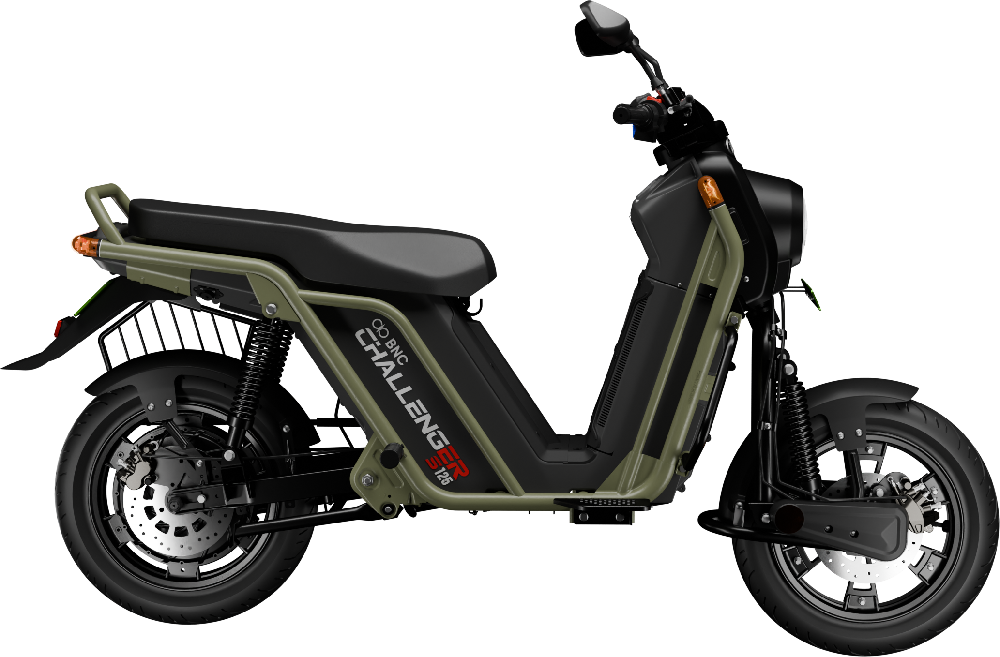

BNC
Challenger
Built in Coimbatore
Made in India
Exoskeletal chassis
200
+
kg
of load. On an
electric
two-wheeler.
Double cradle frame
High-tensile steel
Rain, hills, rough road
Rugged to the core
Built in-house
Designed & developed in India
bncmotors.in
Challenger S110 · S125